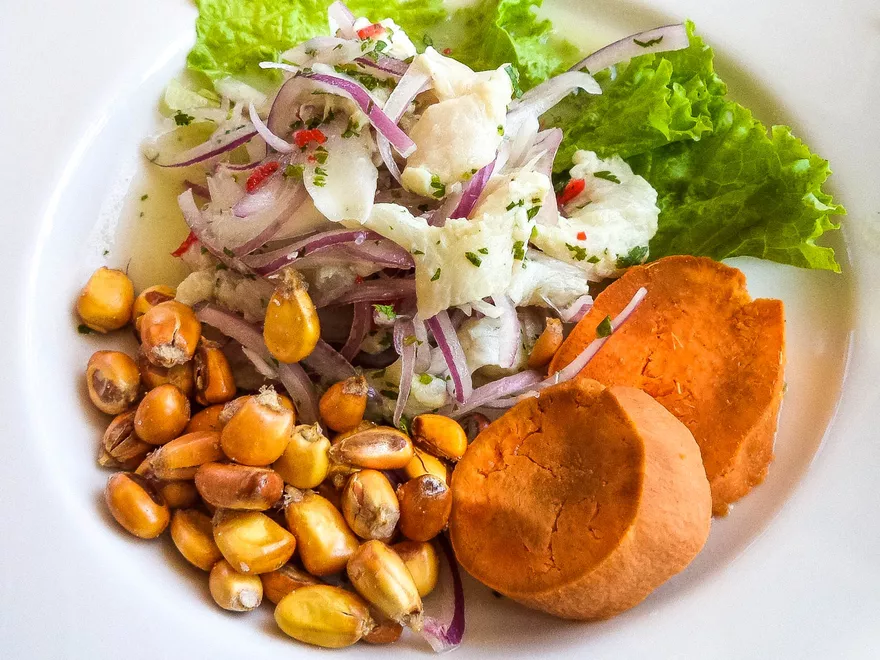

Ceviche

"En el Peru no existen ceviches malos, no hay Ceviches malos. Todos los ceviches en este pais son buenos"
Peru's national dish and it's most recogizable, Ceviche. Ceviche is a seafood dish made from
fresh fish cured in fresh citrus juices, most commonly lemon or lime.
The other ingredients that are added include ají, chopped onions, salt, and pepper.
Ingredients
- 1 ½ pounds very fresh and high quality fish filets (corvina, tilapia, halibut, escolar, or hamachi
- 1 red onion thinly sliced
- 1 cup freshly squeezed lime juice from about 35-40 key limes, or 15-20 Peruvian limes
- Salt
- Pepper
- 3 Cloves of crushed garlic
- 2 Table spoons of Aji amarillo paste
Recipe Instructions
- Cut the fish into small cubes.
- In a large bowl squeeze out the juice from all your limes.
- If you have peruvian limes add one tablespoon of salt, if using key limes add 2 ½ tablespoons of salt.
- Add 2 tablespoons of ground pepper, then mix and taste test.
- Add your fish and onions into the bowl with the lime juice.
- Then add your crush garlic and aji paste.
- Place in the fridge for 25 minutes.
- Take it out and serve (sweet potato and peruvian corn are optional).
Return to top
Return to main page